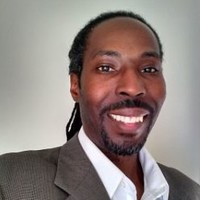

 Hello! Thank you for visiting my page! I'm an easy going person who sees life as an opportunity to grow and make connections with others. I hope my connections with people are win-win collaborations where we can each come away with something that helps us be better people and play it forward to help the next people we come in contact with.
I moved around a bit in my youth. I'm originally from Washington D.C. I moved to Denver, Colorado for a year (when the Redskins defeated the Broncos, which was freakin' sweet). Next, I came to Richmond, Virginia. I went to Towson University in Baltimore, Maryland and then transferred to Virginia Commonwealth University.